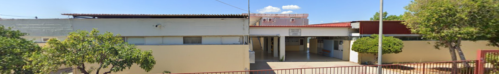
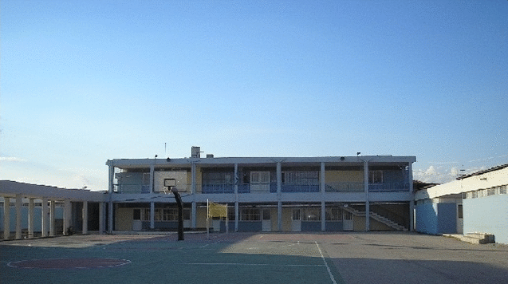

Εξερευνήστε
🏠 Αρχική Σελίδα
Γυμνάσιο Βλαχιώτη
🏛️ Υλική Πολιτιστική Κληρονομιά
Μνημεία
Εκκλησίες
Ακροπόλεις- Καστροπολιτείες
Ενδυμασία
Ναός Αγίων Θεοδώρων
Οικονομικές δραστηριότητες- επαγγέλματα
🎭 Άυλη Πολιτιστική Κληρονομιά
Συνταγές
Προϊόντα
Χοροί
Τραγούδια
Υφαντική Τέχνη
Θρύλοι
Έθιμα
⛰️ Γεωφυσική Κληρονομιά
Ποτάμια
Σπήλαια
Φαράγγια
Γεφύρια
Παραλίες
Ακρωτήρια
Γεωπάρκο Αγίου Νικολάου
Προστατευόμενες περιοχές

Αρχική Σελίδα
Κείμενο

Μνημεία
Εκκλησίες
Ακροπόλεις- Καστροπολιτείες
Ενδυμασία
Ναός Αγίων Θεοδώρων
Οικονομικές Δραστηριότητες - Επαγγέλματα
Συνταγές
Προϊόντα
Χοροί
Τραγούδια
Υφαντική Τέχνη
Θρύλοι
Έθιμα
Ποτάμια
Σπήλαια
Φαράγγια
Γεφύρια
Παραλίες
Ακρωτήρια
Γεωπάρκο Αγίου Νικολάου
Προστατευόμενες περιοχές